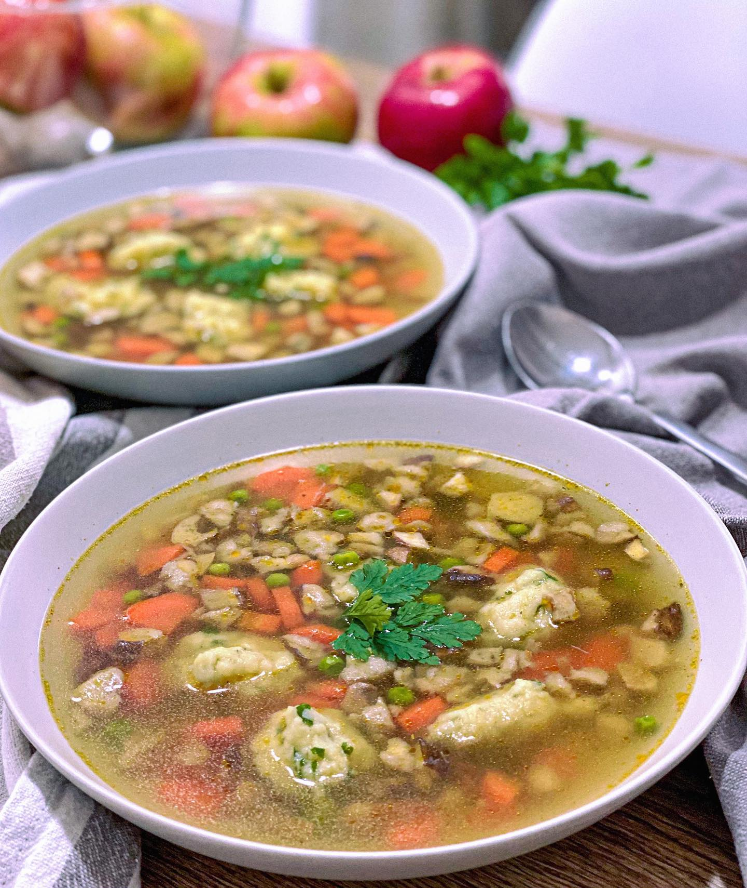

Hubová polievka podľa @laruska_vans — Normy Jedál
🍲Fantastická hríbová polievka s krupicovými haluštičkami. Polievky sú v zime ideálne pre lepšiu imunitu a teplé brušká!
Ingrediencie:
Hríby (ja som použila mrazené)
𝟛𝕜𝕤 veľké mrkvy
𝟚𝕜𝕤 petržlen
Hrášok (kto má koľko rád)
Haluštičky:
𝟙𝟝𝟘𝕘 detská krupica/hrubá múka
𝟙𝕜𝕤 vajce
𝟙𝟘𝟘𝕞𝕝 vody
Nasekaná petržlenová vňať
Soľ/vegeta
__________________________________________________
Na masielku chvíľu opražíme dubáky, pridáme nadrobno nakrájanú mrkvu, petržlen, soľ a korenie. Pripravenú zeleninovú zmes zalejeme hovädzím vývarom pridáme mletú rascu, pol čl červenej papriky.
Pre zvýraznenie hríbovej chuti pridávam hubový bujón, jednu kocku. Tesne pred koncom varenia pridáme hrášok a nahádžeme haluštičky. Varíme kým nevyplávajú hore. Podávame za horúca. Polievku je hustá a preto je ideálna na večeru alebo počas celého dňa😁. Dobrú chuť!
#polievka#hubovapolievka#food#cooking#creativity#vegetables#perfectdinner#slovensko